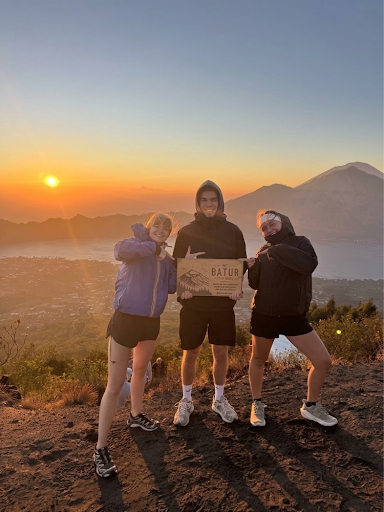
BEST SELLER KINTAMANI, BALI
Mount BaturSunrise Trekking
Experience a magical sunrise from
the summit of Mount Batur with
our local guide.
Packages fromIDR 220,000 / person
View Tour Join Awan Trekking for an unforgettable journey in Bali. Private tours, local guides, and amazing natural experiences beyond the ordinary.
Discover the best of Mount Batur and Bali with our top-rated experiences.

BEST SELLERExperience a magical sunrise from
the summit of Mount Batur with
our local guide.
Explore Mount Batur at sunrise by 4WD Jeep, with time for memorable views across the volcanic landscape.
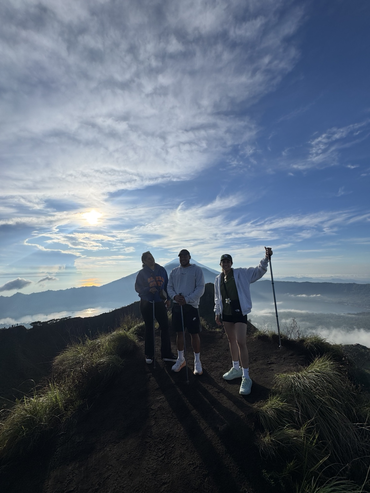
TrekkingDiscover Mount Batur on a daytime hike with a local guide and views across the surrounding caldera.
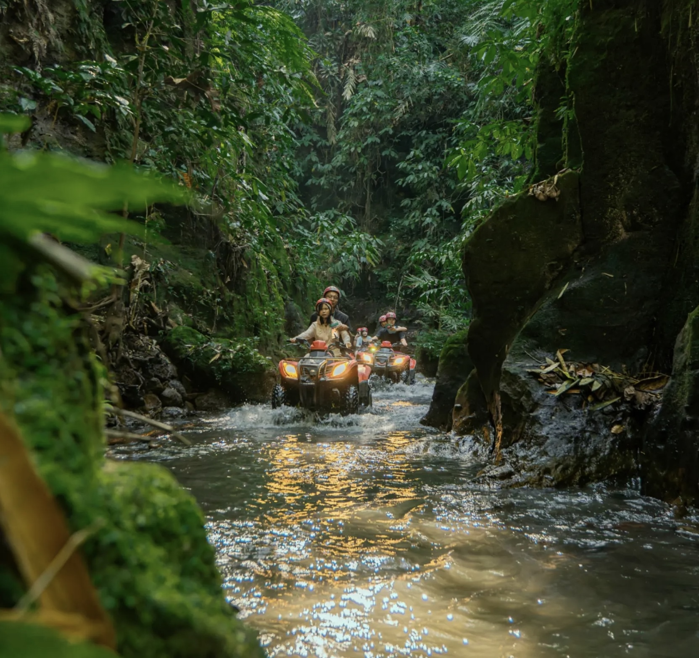
TrekkingEnjoy a guided afternoon trek and watch the changing colors of the volcanic landscape at sunset.
Choose your way to experience one of Bali’s most remarkable volcanic landscapes
Experience a magical sunrise from
the summit of Mount Batur with
our local guide.
Explore Mount Batur at sunrise by 4WD Jeep, with time for memorable views across the volcanic landscape.
Discover Mount Batur on a daytime hike with a local guide and views across the surrounding caldera.
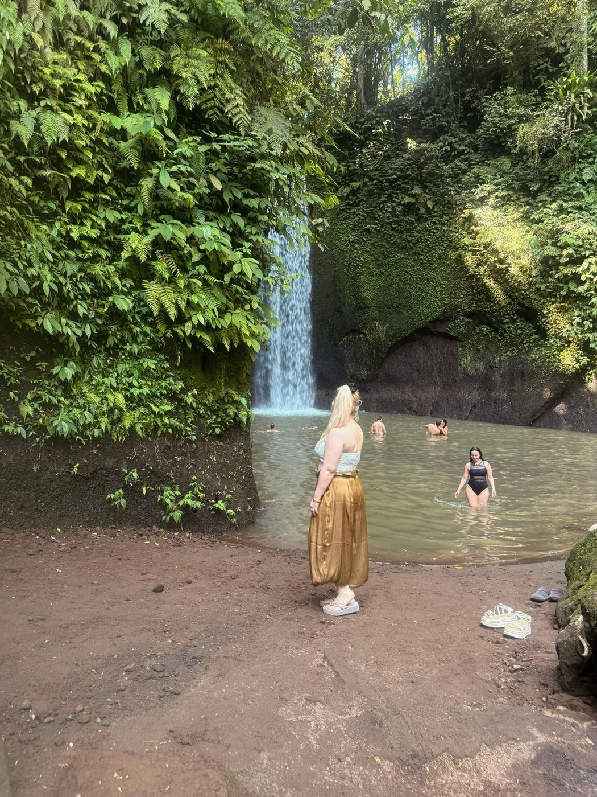
JeepEnjoy a daytime 4WD Jeep journey across the Mount Batur area and take in the volcanic scenery with a local team.
Enjoy a guided afternoon trek and watch the changing colors of the volcanic landscape at sunset.
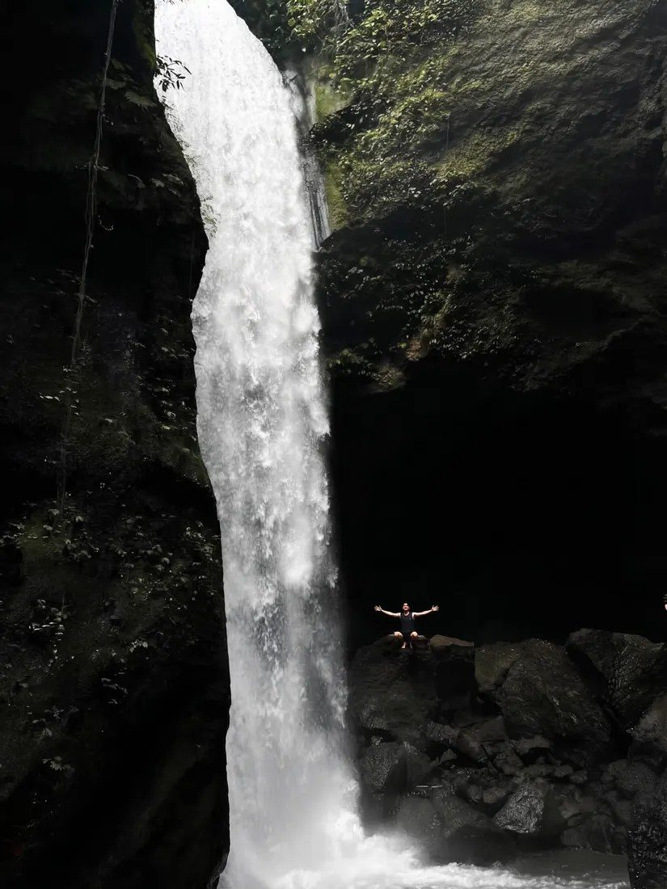
JeepTake a 4WD Jeep journey across the Mount Batur area and enjoy the sunset over the volcanic landscape.
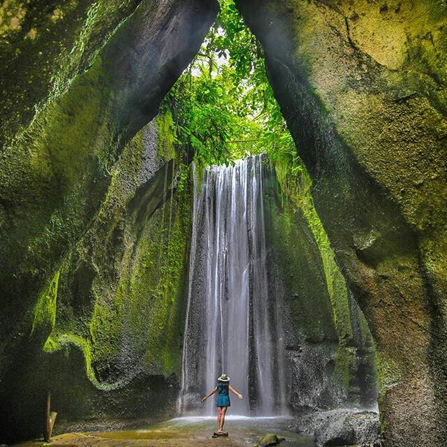
WaterfallVisit the beautiful Tukad Cepung Waterfall and explore its distinctive natural surroundings.
 Rafting
RaftingEnjoy a guided white-water rafting experience through Bali’s lush river landscape.
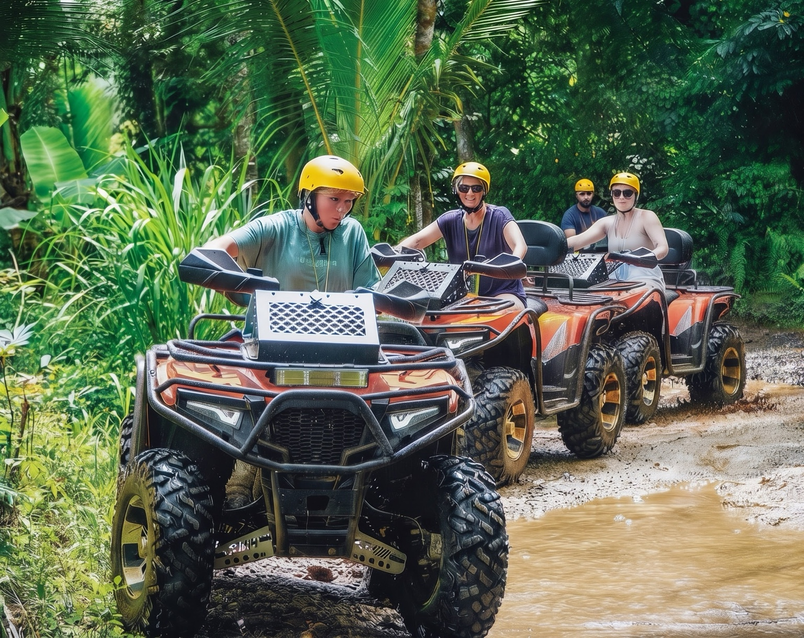
ATVRide through adventurous outdoor tracks and enjoy an exciting ATV experience in Bali.
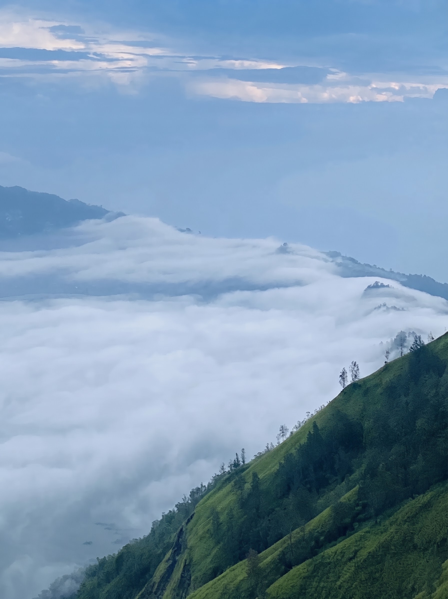
Special ComboCombine an exciting ATV ride with white-water rafting on the Ayung River for a full day of outdoor adventure.
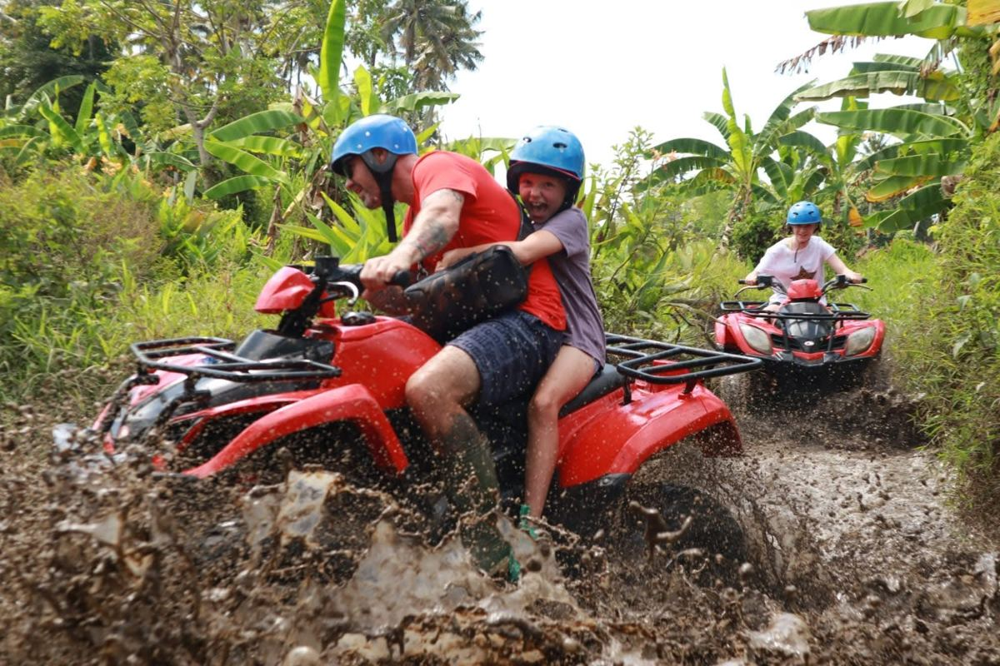
TrekkingChallenge yourself with a guided Mount Agung ascent and experience sunrise from Bali’s highest volcano.
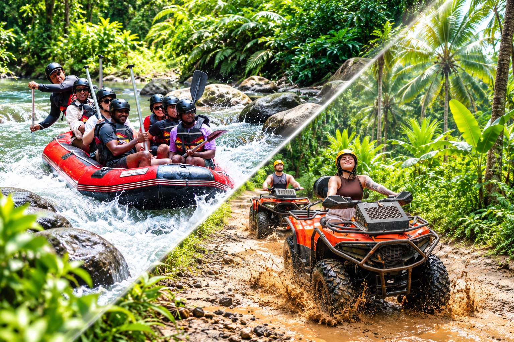
TrekkingTrek through forested mountain trails and enjoy panoramic views of the Batur caldera area.
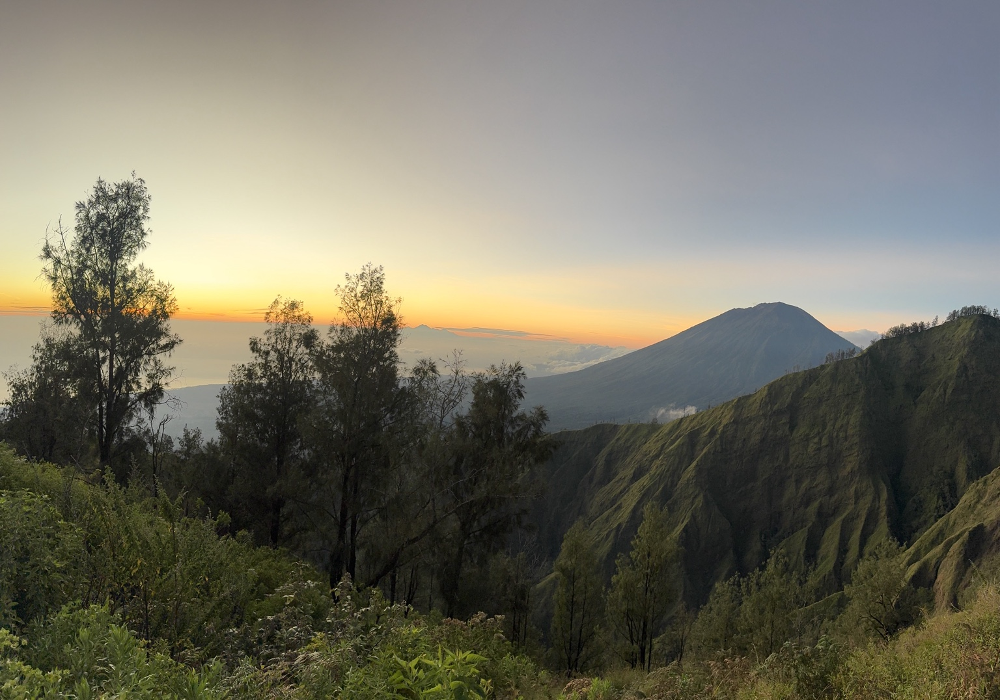
TrekkingTrek the natural trails around Trunyan Hill to enjoy the sunrise, with views of Lake Batur and the surrounding mountains.
Make your Bali journey even more memorable. If the route and schedule allow, we can arrange a stop along the way.
Stops are optional and subject to route and schedule. Food, drinks, and souvenirs are paid separately.
We believe the best adventures are personal. Our goal is to help guests experience Mount Batur’s landscapes with thoughtful service, local knowledge, and a genuine connection to Bali.
Whether you choose a guided sunrise hike or a Jeep journey across the volcanic terrain, we’ll help you plan an experience that fits your trip.
Plan Your Adventure ↗Simple planning, local insight, and clear information from enquiry to experience.
Read honest reviews from travellers who have explored Bali with Awan Trekking.
Quick answers before you book.
Our tours are offered as private tours — just you, your group, and your local guide.
Please contact our team about pickup arrangements for your area and tour. We will confirm the details with you before booking.
Message us on WhatsApp with your preferred tour, date, and group size. We will confirm availability and package details before you book.
Yes, if the route and schedule allow. Optional stops such as the Tegallalang Rice Terrace or a coffee plantation can be arranged — just let us know.
Comfortable clothing and footwear, a light jacket for the cool highlands, a camera or smartphone, and some cash for optional purchases. Ask us if you would like advice for your specific tour.
Contact our team to ask about availability, tour options, and pickup arrangements.